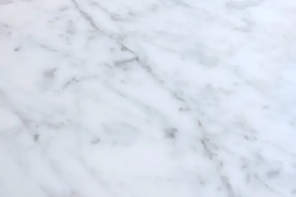
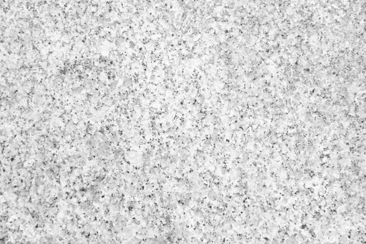
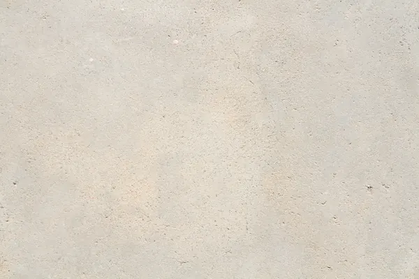
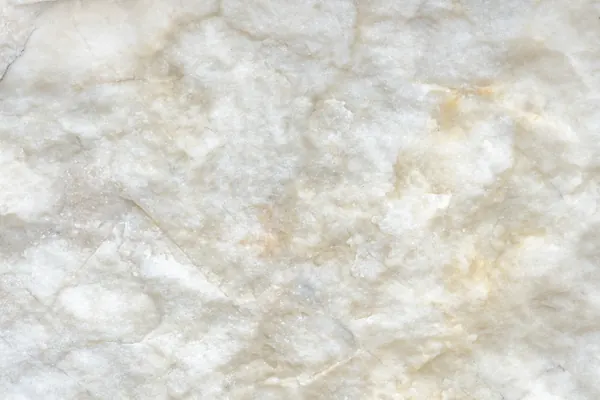
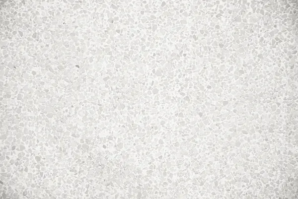
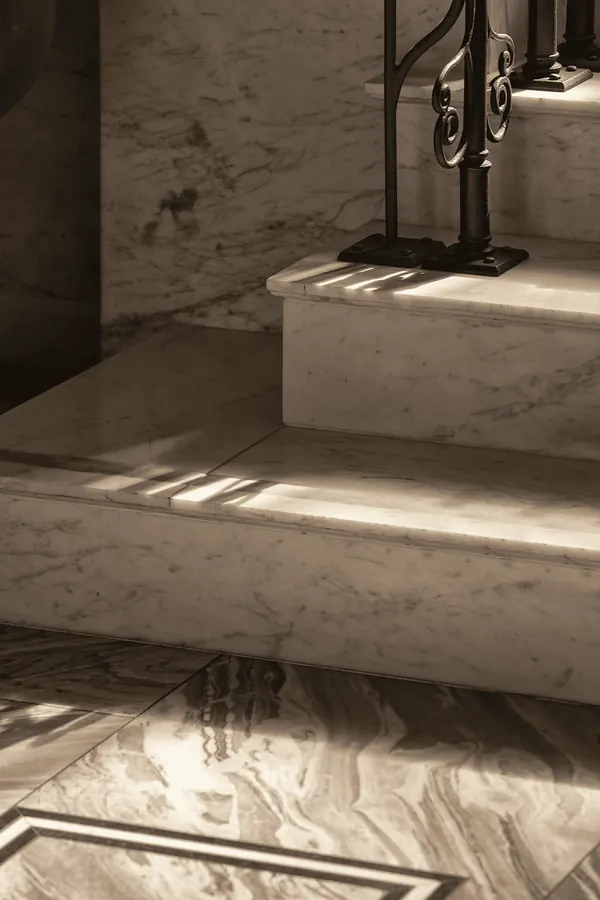

Blaty i parapety
Blaty kuchenne, łazienkowe i parapety z granitu, marmuru i konglomeratu, z otworami pod zlew, płytę i baterie.

Blaty, schody, posadzki, parapety i elewacje z marmuru, granitu i piaskowca. Rodzinna firma z Sukowa koło Daleszyc, w branży od 1989 roku.
Biuro czynne pon.-pt. 7:00-15:00
Każde zamówienie robimy indywidualnie: pod wymiar, pod wnętrze i pod sposób użytkowania. Pomagamy dobrać kamień, a montaż wykonują nasze ekipy.
Blaty kuchenne, łazienkowe i parapety z granitu, marmuru i konglomeratu, z otworami pod zlew, płytę i baterie.
Schody wewnętrzne i zewnętrzne: stopnie, podstopnie, cokoły i spoczniki, także z podświetleniem.
Posadzki w domach, hotelach i obiektach publicznych, z wzorami i pasami z kamienia w innym kolorze.
Kamienne okładziny ścian budynków mieszkalnych, biurowych i użyteczności publicznej.
Rzeźby, tablice, kominki, paleniska i elementy ogrodowe wykonywane według projektu.
Ołtarze, ambony, chrzcielnice, posadzki prezbiteriów i płaskorzeźby. To nasza specjalność.
Prowadzimy zamówienie w całości, więc nie trzeba szukać osobno projektanta, dostawcy kamienia i ekipy montażowej.
Mamy szeroki wybór kamienia w magazynie i u sprawdzonych dostawców. Szczególne miejsce w ofercie mają kamienie z polskich, w dużej części świętokrzyskich kopalni.
Sprowadzamy też kamień z Grecji, Włoch, Indii i innych krajów. Próbki można obejrzeć na miejscu w Sukowie.





Pałace i hotele, kościoły, budynki publiczne i prywatne domy. Zdjęcia można przesuwać w każdej karcie i powiększać.
Posadzki z intarsją, schody, blaty łazienkowe i dekoracje.
Ołtarz, ambona i płaskorzeźby z jasnego marmuru.
Elewacja i mury oporowe z kamienia.
Posadzka nawy i prezbiterium, łukowe stopnie.
Elewacja z jasnego i ciemnego kamienia.
Blaty kuchenne i łazienkowe, posadzki i okładziny ścian.

Zaczynaliśmy jako rodzinny Zakład Kamieniarski Marmur. W 2015 roku powstała marka Marmur Kielce, która łączy regionalne tradycje kamieniarskie z nowoczesną architekturą i dobrą obsługą klienta.
Nasz zespół to doświadczeni kamieniarze, wykwalifikowane ekipy montażowe i doradcy, którzy pomagają dobrać kamień do wnętrza. Przez lata wykonaliśmy około 600 blatów, 350 schodów, 120 elewacji i 500 dekoracji.